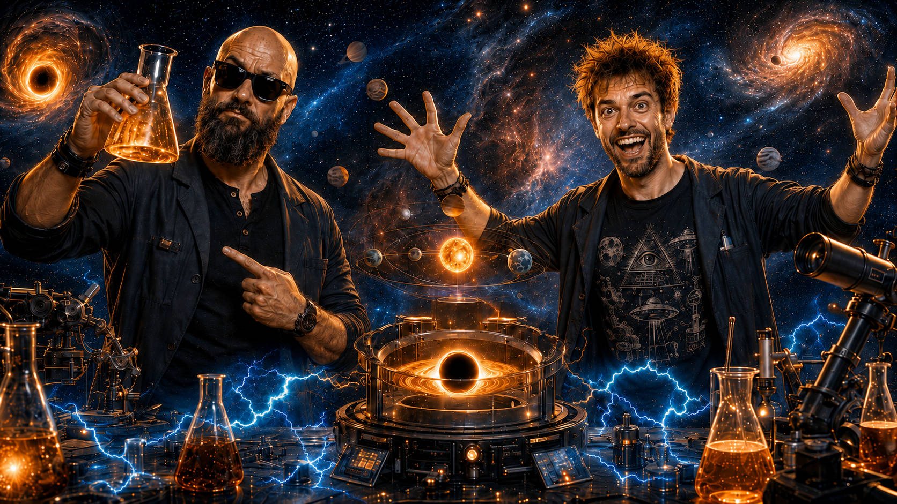

Tady se o vesmíru jen nečte. Tady si ho můžeš vyzkoušet. Hoď politika do černé díry, zjisti, co se dnes děje na obloze, nebo se vydej na průlet Sluneční soustavou.
Vyber politika, Slunce nebo vlastní fotografii a sleduj, co s nimi udělá gravitace.
SPUSTIT EXPERIMENT →Připravujeme průvodce, který ti ukáže, co můžeš dnes pozorovat na obloze.
VE VÝROBĚPřipravujeme interaktivní cestu od Slunce přes planety až k hranicím Sluneční soustavy.
VE VÝROBĚ